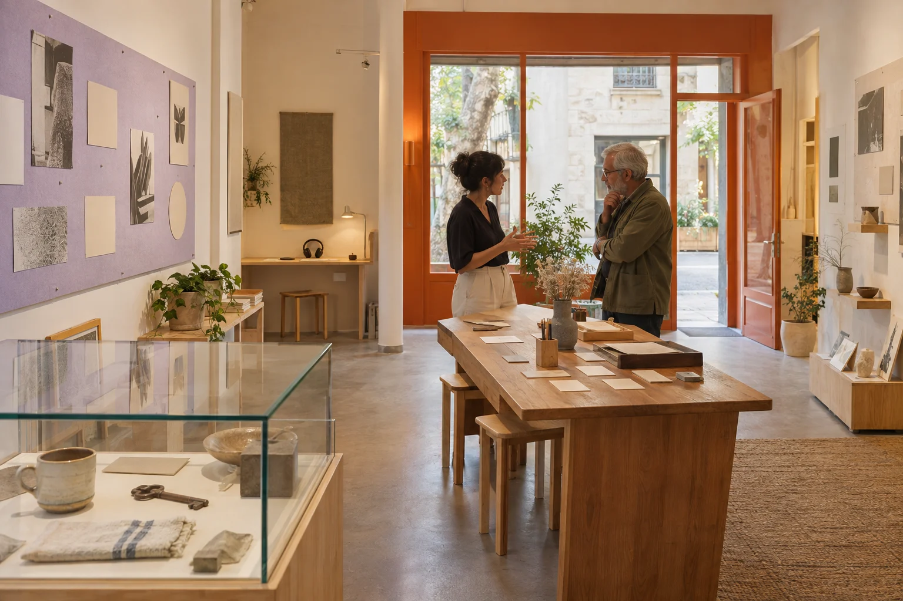

People making
room for people.
Twenty colleagues working across spatial design, content, production and coordination. We stay close to the subject and clear about who will bring it into the room.

The visitor is
part of the brief.
Gatherline began in Barcelona in 2017 around a practical question: how can a temporary room help people understand something that matters to an organisation?
Our work starts with cultural and brand teams, a specific subject and a named content owner. We shape the invitation, the objects and the moments of participation, then coordinate an agreed production package.
Our core region is Catalonia. We work through a defined scope with appointed suppliers and venues; we do not own event spaces or run a ticket platform.
This company history, team and portfolio are fictional. Images show generated people and spaces, not a real staff team or completed commission.
Different disciplines.
One shared brief.
Spatial design
Develop the relationship between objects, rooms and visitor choices.
Content & graphics
Structure the subject, captions, prompts and visual communication.
Production leads
Define and coordinate the agreed supplier and installation package.
Project coordination
Track decisions, responsibilities and the programme handovers.
Studio operations
Support the small studio and its agreed project arrangements.
Tell us what
people should
leave with.
It might be an understanding of a material, confidence to ask a product question or a fresh way of looking at an everyday object. That is a more useful beginning than choosing a decorative style.
The local brief builder lets you describe only the broad format, audience, size, space and lead time. No personal or guest information is needed.
Example contact only: studio@gatherline.example. No monitored inbox or real office address is supplied.